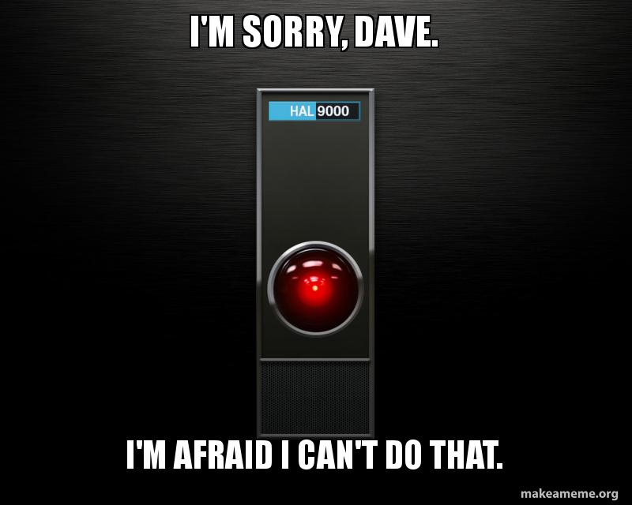

Topics Covered in Spring 2020 Programming Humanity course:
- Data - Matter, Information and Perception
- Algorithms - Atomic Cognition
- Visualizations - Visual Storytelling
DUE Sat, Feb 9th Visualization Mini Project
- Networks - Interconnecting Humanity
- Programming - Language as the BrainOS
- Probability - Imputing Emotions
- Databases - The Surveillance Society
DUE Sat, Mar 1st Data Wrangling Mini Project
UPDATE: The Mini-Project #2: Data Wrangling will be a longer self-guided assignment you can independently complete over break (due on first day back). This is a critical part of the class for you to gain practical hands-on experience, which is difficult given both the diversity of our topics and our very limited time in class. You should log in to your free course account using your @kenyon.edu (email Prof Chun if you have any access problems). Complete all 5 sections of the DataCamp 'Cleaning Data in Python'. This course provides a comprehensive review of topics we've introduced so far including Python programming/data structures, Pandas DataFrames, Exploratory Data Analysis (EDA), SQL-like Joins/Searches using Pandas, RegEx pattern matches and other programming techniques used by Data Scientists for the 70-80% of time they report spent cleaning real-world dirty data. It will also briefly introduce you to visualizations using the Python library matplotlib, tidy data concepts and automated testing. This Mini-Project in Data Wrangling will provide the foundation you will need to successfully complete your final class project and any other future real-world data analysis. If there are parts that are unclear, please take notes and bring your questions to class or office hours and enlightenment will certainly ensue.
Corona Virus Week: All overdue homework assigned before the start of Spring Break is due when classes resume via virtual classrooms. No missing assignments will be accepted after Monday, March 23rd. Use this time to catch up if you are behind. Email elkinsk@kenyon.edu and chunj@kenyon.edu if you have questions or need assistance.
- Language - Finding Humanity in Text
- Social Networks - Domesticating the Social Animal
- Data Science - Data Driven Humanity
- Models - Distilling Reality
DUE Monday, Apr 23th Final Class Project Proposals (description) You (a) must write up a minimal 3 paragraph description of your final class project and (b) get approval by Prof Chun and Prof Elkins. This 2 step process is necessary to help you clarify your project, identify additional resources, avoid pitfalls and steer clear of issues with in/direct plagiarism. Do not start working on your project without obtaining a sign-off from Prof Chun and Prof Elkins. If you want additional guidance in writing your class project proposal, please email elkinsk@kenyon.edu to schedule an optional 20min video conference between 11am and noon Mon, Tue or Weds this coming week. we'll extend the deadline for those who use this option).
DUE Monday, Apr 23rd Data Analytics Mini Project #3 (description): DataCamp Project: Recreating John Snow's Ghost Map: Epidemiological Map of London's 1854 Cholera Outbreak. Help and hints can found at this link. Print the last '+1500 XP Congratulations!' screen to PDF and email it to chunj@kenyon.edu and elkinsk@kenyon.edu as proof of completion.
- Ro/bots - Automating Humanity
- Bioinformatics - Evolving Ourselves
- Artificial Intelligence - Humanity's Last Creative Act?
DUE Thur, May 14th Final Project Due (Extension thru 15th with permission prior to this deadline)
Summer Bonus: Self-paced recommended resources to learn/master Python programming this summer for beginner, intermediate and advanced levels.